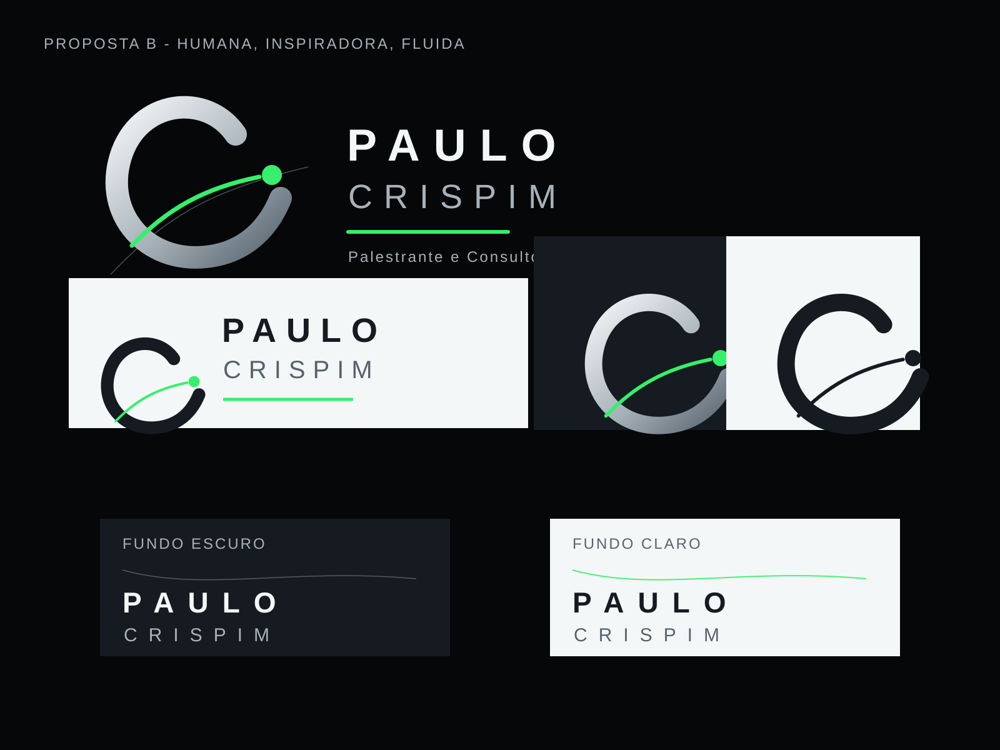

Etapa 6 | Kit em validação
Kit de Identidade Visual
Rota recomendada: Proposta B. Este kit antecipa a identidade para apresentação e ainda depende de aprovação formal.
Logo recomendado

Paleta
#050708
#151B20
#A8B2BA
#F4F7F8
#063A46
#35F06A
| Nome | HEX | RGB | Uso |
|---|---|---|---|
| Preto técnico | #050708 | 5, 7, 8 | Fundos premium |
| Grafite estrutural | #151B20 | 21, 27, 32 | Painéis |
| Cinza metal | #A8B2BA | 168, 178, 186 | Textos secundários |
| Branco frio | #F4F7F8 | 244, 247, 248 | Contraste |
| Azul-petróleo | #063A46 | 6, 58, 70 | Profundidade |
| Verde energia | #35F06A | 53, 240, 106 | Direção e progresso |
Tipografia e hierarquia
Usar Geist, Arial ou Helvetica. Títulos com peso 700 a 800, textos com peso 400 a 500. Espaçamento amplo apenas na marca e em títulos curtos.
Usos corretos e incorretos
| Corretos | Incorretos |
|---|---|
| Fundo preto, grafite, petróleo ou branco frio; verde como ponto ou linha; espaço editorial; fotos profissionais. | Foto poluída, verde dominante, distorção, sombra pesada, dourado excessivo e fonte decorativa. |
Aplicações
- Cabeçalho de site com logo horizontal e CTA controlado.
- Capa de apresentação com fundo escuro e linha ascendente.
- Card de palestra com tema em destaque.
- Post de LinkedIn limpo e contrastado.
- Cartão digital após definição de contatos.
Pendências
Aprovar proposta B, exportar PNG final, integrar fotos profissionais, definir complemento profissional e confirmar canais de contato.